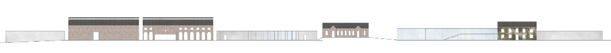
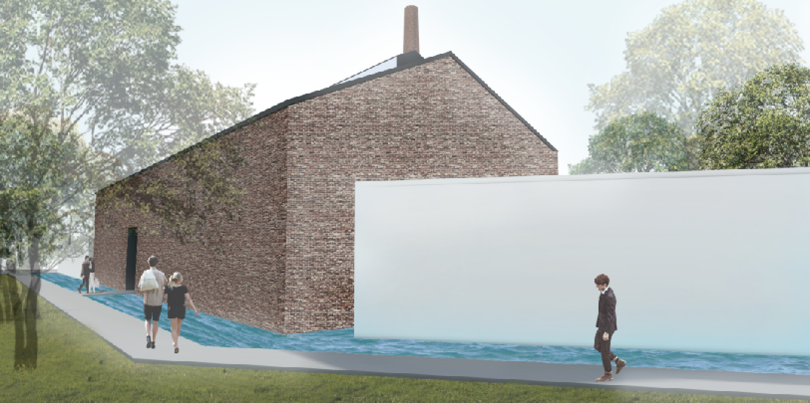
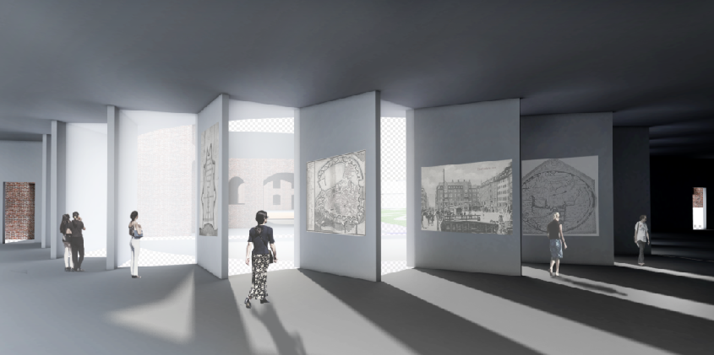
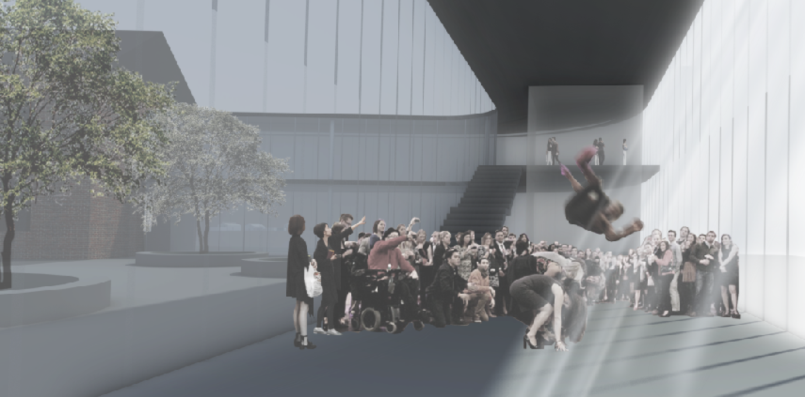
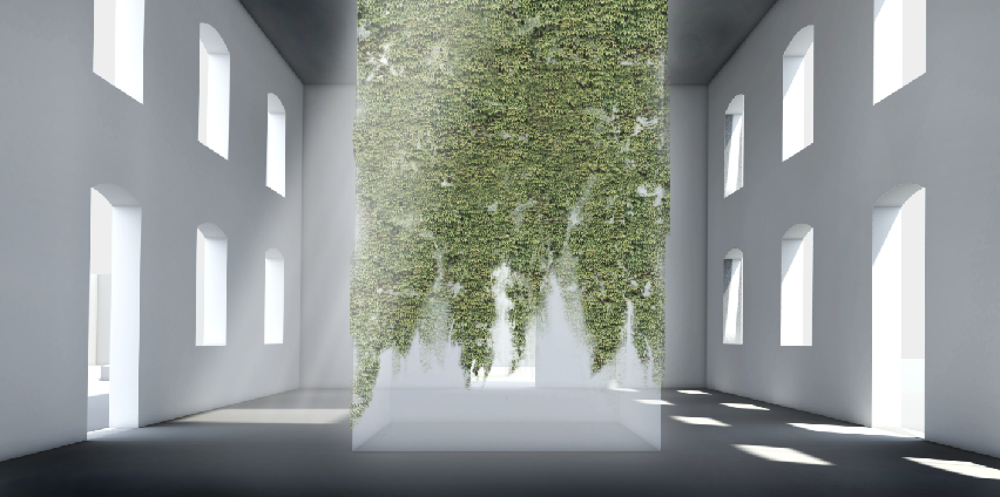
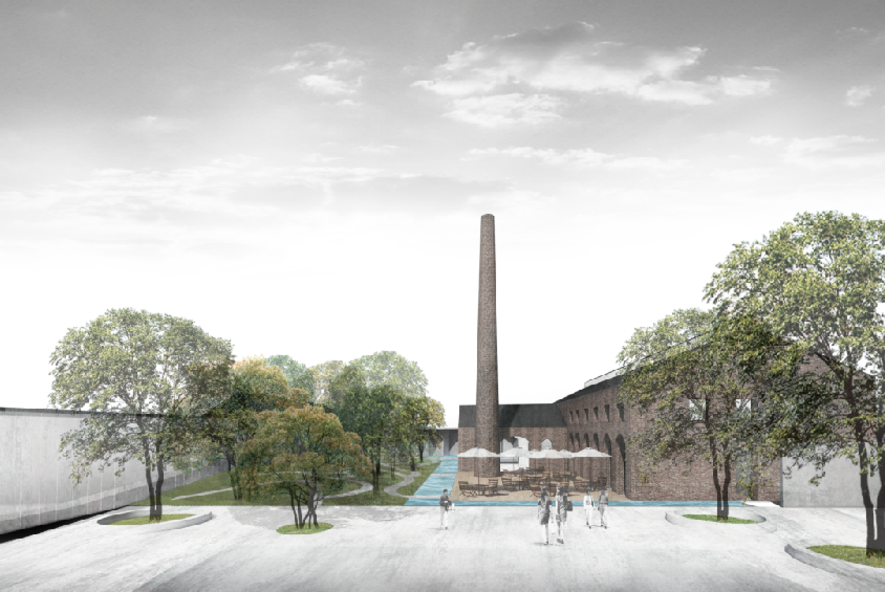

I designed The History of Garden Museum in Copenhagen, focusing on the history of parks in Copenhagen.
Copenhagen has parks which were laid out on the grounds of the old fortification ring after it was decommissioned in the 1870s, the parks still retains elements from the old fortifications in its topography. The Fortification Ring has been dominated by a number of parks and distinctive greenspaces and it is still maintained and developed as a green belt within the city limits.
Therefore, the greenspaces make the city more active and pleasant environment. The citizens in Copenhagen have a new greenspace, getting information about the history of parks in the museum.
The design of museum was inspired by the shape of old fortifications which are still clearly seen in the topography in Copenhagen. The characteristic of fortification is enclosed by water and walls, so I used them as a concept. The walls are used in the boundary of site and road . the water is on the north where the entry for the building is located. When people have to enter the building, they encounter the walls first, making them curious about the building and then see the water. After crossing the bridge, they will finally see the site. At this moment, they feel the quiet, calm atmosphere and nature environment.
Upon entering the site, visitors are to take a path to see the exhibition by chronological order, starting from the 16th Century to the future. Each gallery has unique courtyard and exhibition rooms according to their era.
The ramparts, bastions and moats of the former fortifications are still clearly seen in Before the 17C parks like Kongens Have, Christianshavns Vold and Kastellet. The design of gallery1 was inspired by the shape of bastions and moats. The walls become exhibition walls and make interior spaces more bright, reflecting the sunlight.
Gallery2 shows the history of 17C-19C parks, Tivoli, Østre Anlæg, Ørstedsparken and Botanisk Have. Originally they also were the part of Rampart, but became the valuable parks for citizens including children. They have popular promenades along the lake, lovely view and play areas. In front of this gallery, I put the promenades having organic shapes which people can enjoy nature.
After passing the gallery2, there is the big hall which can provide an area for events. I use the opaque glass for this hall because it faces south, even if my concept is a closed shape. During the day, it draws the sunlight and illuminates at night. The gallery about contemporary parks is located next to it. It has the courtyard with play area. Contemporary public area has open play area for bicycling and sports with less plants.
I designed the future garden, putting the atrium inside of the existing building. It allows natural light to enter the interior spaces with ivy. Ivy symbolizes the future. It keeps growing and making the building a pleasant space.
